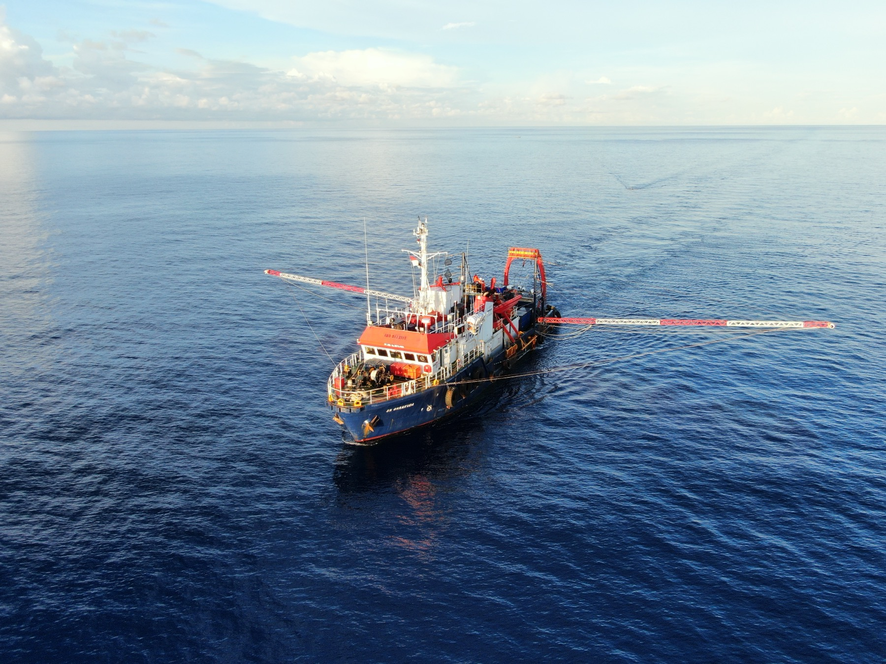

01 / Marine Geophysical
2D/3D High Resolution Marine Seismic
References covering high-resolution seismic acquisition, geohazard survey, processing, and interpretation for exploration and development planning.
- Provision of Bathymetry Survey and Vessel Charter Services - PT Sumbawa Timur Mining, 2025
- Research and development services for submarine HVAC cable route survey in Indonesia - Keppel Energy Pte Ltd, 2025
- Provision of Debris Survey Services - Saka Indonesia Pangkah Limited, 2025
- Provision of Geophysical Survey and Associated Services - Medco E&P Natuna Ltd and Medco Energi Madura Offshore Pty. Ltd., 2024
- Geohazard Survey 2D/3D UHR Seismic Survey - PT Seascape Survey Indonesia for Pertamina Hulu Kalimantan Timur, 2024
- Pipeline Side Scan Survey and WHP Subsidence Analysis - Husky-CNOOC Madura Limited, 2023
- Geohazard Survey Services Call 6 - PHE ONWJ, 2023
- Provision of Geophysical and Shallow Geotechnical Site Investigation Services, 2023
- Geohazard Survey Services Call 5 - PHE ONWJ, 2023
- Geohazard Survey Services Call 4 - PHE ONWJ, 2022
- Geohazard Survey Services Call 3 - PHE ONWJ, 2022
- Geophysical, geotechnical, and other related services, 2022
- Geohazard Survey Services Call 2 - PHE ONWJ, 2022
- Geophysical, geotechnical, and other related services, 2021
- Change order bathymetric, geophysical, and offshore geotechnical survey services at Cirata 145MW Floating Solar Power Project - PLTU Cirata, 2021
- Geohazard Survey Services Call 1 - PHE ONWJ, 2021
- Geotechnical, bathymetric, and geophysical survey services at Cirata 145MW Floating Solar Power Project - PLTU Cirata, 2021
- High Resolution Marine Seismic Survey Services, East Seram PSC, Offshore Kobi and Bula, Maluku - Balam Energy Pte Ltd, 2020
- Bathymetry Acquisition Services, East Seram PSC, Offshore Kobi and Bula, Maluku - Balam Energy Pte Ltd, 2020
- UHR/HR Seismic Survey for Mahoni, Sepinggan Sierra, Sepinggan Rajah, Sejadi, and Serang Baru, East Kalimantan - PHKT, 2020
- Geophysical, geotechnical, and other related services, Natuna Sea, Riau Islands - Medco E&P Natuna Ltd, 2020
- Marine site survey for intake, outfall, jetty wharf, bathymetry, manual sounding, SBP Hi-Res, and seabed sampling at Central Java Power Plant Project, Batang - PT Hydrocore for Mitsui Engineering and Shipbuilding Co. Ltd, 2020
- Marine survey for bathymetric, seabed Hi-Res sub-bottom profiling, magnetometer, and geotechnical investigation at Central Java Power Plant Project, Batang - PT Hydrocore for Wakachiku Construction Co. Ltd, 2019
- Geotechnical, bathymetrical, geophysical, and hydrometeorological survey, offshore and onshore Penajam, East Kalimantan - PT Kereta Api Borneo, 2017
- Bathymetric survey for Chipmill Jetty at Kariangau Balikpapan River, East Kalimantan - PT Fajar Surya Swadaya, PT Djarum Group, 2010
- Vibrocoring work, 230 points up to 500 m water depth, for Pertamina Matindok Geochemistry Study - PT MGS, 2011
.jpeg)


.jpeg)


.jpeg)
.jpeg)
.jpeg)
.jpeg)
.jpeg)
.jpeg)